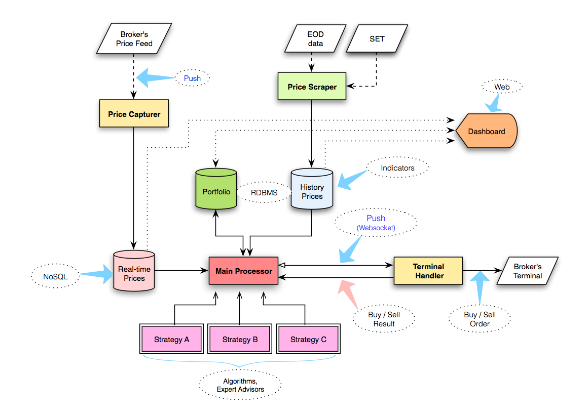
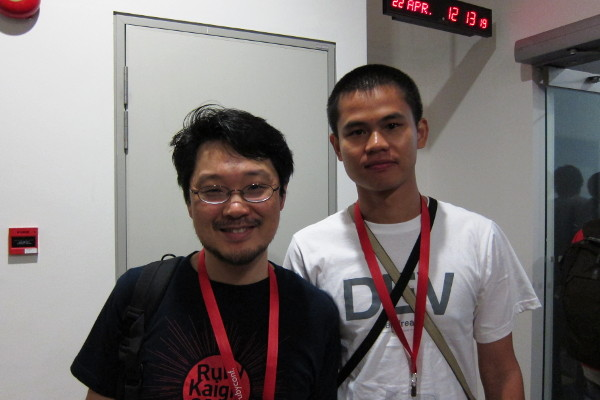
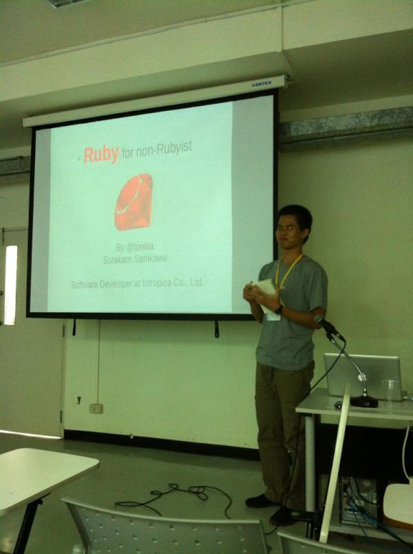
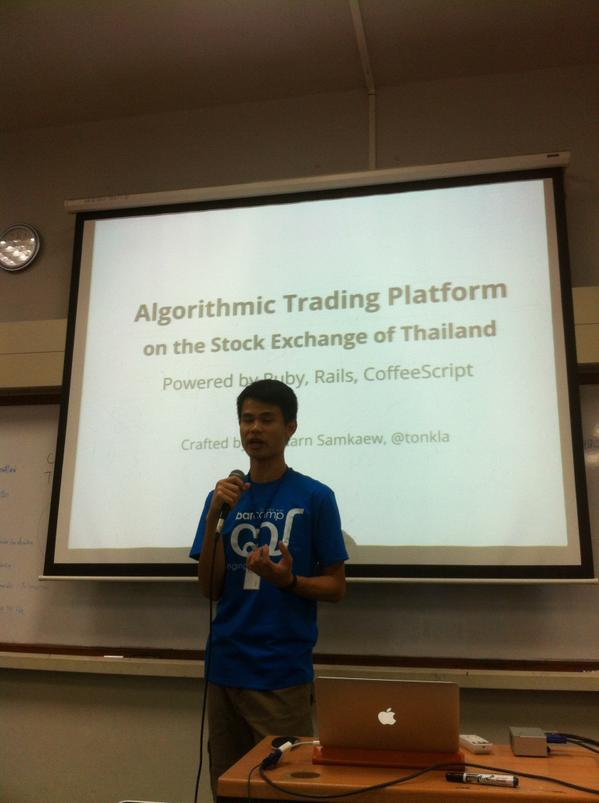

Surakarn Samkaew (@tonkla) is an active lifelong learner who always “Stay Hungry, Stay Foolish.” to learn new things. He enjoys writing clean and elegant codes, then seeing them work properly, reliably, and fast.
He started to work as a full-time programmer since 2005. After 2 years of working in a software house business with an enterprise culture and a tool like Java and C#, he was bored with a software development and thought about leaving his job. Until he met Ruby on Rails (and friends), which boosted his motivation and gave him a fresh aspect of software development; Ruby shows him the meaning of “Elegance” without dictionary, he undoubtedly became a Ruby lover since then.
At 2018, his preferable programming languages are JavaScript (via TypeScript or Babel), Go, Ruby, respectively.
He is a kind of bookworm, The Richest Man in Babylon and Rich Dad Poor Dad are his favorite books that bring him to the world of personal finance. He realizes the power of “Compound Interest” and “Cash Flow”. Another one of his hobbies are doing an experiment on automated forex trading, he had crafted tons of lost robots with MQL4.
He never declares himself as a clever or a highly-skilled developer, instead he believes he is a fairly passionate developer who is happy to solve a problem by coding.
BSc in Computer Engineering, 2001-2004
Suranaree University of Technology
Year: 2018
Organization: Indie Dish, Bangkok
Role: Full-Stack Software Developer
Toolbox: Go, Ruby on Rails, React (+Redux), GraphQL, PostgreSQL
Year: 2017
Organization: Odd-e (Thailand), Bangkok
Role: Software Developer
Toolbox: Spring Boot, Kotlin, TypeScript, Angular, Node.js (Hapi)
Year: 2017
Role: Freelance Web Developer
Toolbox: Ruby on Rails, JavaScript (jQuery, Angular)
Year: Mid 2015 - 2016
Status: Study Leave (Buddhism)
Year: 2015
Role: Freelance Web Developer
Toolbox: Ruby on Rails, JavaScript (jQuery, Angular)
Year: 2014
Organization: Opendream, Chiang Mai
Role: Software Developer
Toolbox: Android, Java, Python, Django, Git, Docker, Ubuntu
Projects: ThaiEMS1669, แชะก่อนหม่ำ
Year: 2013
Status: Study Leave (Investing & Trading)
Year: 2012
Organization: Intropica, Chiang Mai
Role: Full-Stack Web Developer
Toolbox: Ruby on Rails, JavaScript (jQuery, Backbone.js), Chef.io
Year: 2010 - Mid 2011
Organization: Opendream, Bangkok
Role: Full-Stack Web Developer
Toolbox: Drupal, PHP, JavaScript, Python, Django, PostgreSQL, Solr, Git
Year: Mid 2007 - 2009
Organization: UsableLabs, Prince of Songkla University
Role: Full-Stack Web Developer, DevOps
Toolbox: Ruby on Rails, Python, Django, JavaScript, Drupal, MySQL, Debian
Project: GotoKnow (before 2012)
Year: 2005 - Mid 2007
Organization: eProfessional, Bangkok
Role: Programmer
Toolbox: Java (Servlet, Spring), C# (.NET)
FOR EDUCATIONAL PURPOSES ONLY.
This project is just a proof-of-concept about automated trading platform (for robot, EA - Expert Advisor) on The Stock Exchange of Thailand. On 2013, there is no broker that provides automated trading method to (poor) individual investors, only institutional investors can take the advantage. The platform allows individual investors/traders automatically send orders to the market when the securities prices match up with their pre-conditions.

The project consists of 5 modules,
klass_trade, then triggers the UIs.This project is just the experiment, it could work by following the hypothesis but still be far away from the practical use. Firstly, the tools (Ruby, and certainly, my coding skill) are not suitable for this job, it is quite slow for (a lot of) data processing, it should be faster. Secondly, it is a kind of dirty hack, which quite hard to use, nowadays many brokers provide official tools for doing automated trading for individual investors. Thirdly, I have not enough knowledge about trading, so I cannot craft the profitable robot. Lastly, after that, I found the MetaTrader4 (with MQL4), this is what I really want about automated trading platform, it is the one of great softwares that I have used.

At RedDotRubyConf, with his idol, the Ruby creator, Yukihiro Matsumoto, 2011
Spreads an elegance of Ruby to the world, at Barcamp Chiang Mai, 2012
Proud to present, at Barcamp Chiang Mai, 2014